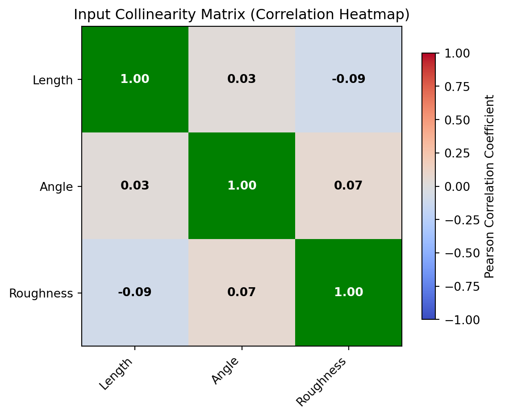

A streamlined guide using the SimulationStudy manager.
Use the SimulationStudy manager to handle the entire lifecycle: storage, diagnostics, active refinement, analysis, and intelligent caching.
Note
In this tutorial, we will intentionally feed the study “bad” data (with a large gap in the input space) to demonstrate how the active learning module automatically identifies and fixes issues. We will also demonstrate how the new Layered Caching engine makes exploring multi-dimensional parameter spaces nearly instantaneous.
1 Setup, Generation & Smart Initialization
We’ll define a simulated physics function with heteroscedastic noise and generate an initial design containing a deliberate gap between 3mm and 7mm.
Notice that we no longer need to explicitly define our input columns when creating the SimulationStudy; the manager will automatically infer them from the data!
import numpy as npimport pandas as pdimport timefrom digiqual import SimulationStudy# --- Define the Physics ---def apply_physics(df):"""Simulates a signal with quadratic trends and heteroscedastic noise.""" signal = (10.0+ (2.0* df["Length"])+ (0.5* df["Length"] **2)- (0.1* np.abs(df["Angle"])) ) noise_scale =0.5+ (1.5* df["Roughness"]) noise = np.random.normal(loc=0, scale=noise_scale, size=len(df))return signal + noise# --- Create Flawed Data (Gap between 3mm and 7mm) ---df1 = pd.DataFrame( {"Length": np.random.uniform(0.1, 3.0, 40),"Angle": np.random.uniform(-10, 10, 40),"Roughness": np.random.uniform(0, 0.5, 40), })df2 = pd.DataFrame( {"Length": np.random.uniform(7.0, 10.0, 40),"Angle": np.random.uniform(-10, 10, 40),"Roughness": np.random.uniform(0, 0.5, 40), })df_initial = pd.concat([df1, df2], ignore_index=True)df_initial["Signal"] = apply_physics(df_initial)# --- The NEW Smarter Initialization ---# 1. Initialize with a clean slatestudy = SimulationStudy()# 2. Add data: It automatically infers 'Length', 'Angle', 'Roughness' as inputs!study.add_data(df_initial, outcome_col="Signal", overwrite=True)# Test the UI Helper methodsprint(f"Inferred Inputs: {study.inputs}")threshold_defaults = study.get_data_summary("Signal")print(f"Auto-Threshold suggestion (Median Signal): {threshold_defaults['median']:.2f}")
Data initialized/overwritten. Total rows: 80
Inferred Inputs: ['Length', 'Angle', 'Roughness']
Auto-Threshold suggestion (Median Signal): 35.44
TipDesigning real experiments: generate_lhs
Here we use random synthetic data. For real simulations, build the input design with digiqual.sampling.generate_lhs(n, ranges), which gives a space-filling design you can run in order and stop early (details).
2 Diagnosis (Detecting the Issue)
We ask the SimulationStudy manager to diagnose the health of our experiment.
Warning
Because of our deliberate gap, we expect the diagnostic engine to flag the Input Coverage test as failed. The full list of tests and their default thresholds is in Sampling & Diagnostics.
You can also visually inspect collinearity using the plot_collinearity() method, which renders a correlation matrix heatmap with VIF and correlation coefficient annotations.
study.plot_collinearity()

Figure 1: Collinearity analysis matrix
3 Adaptive Refinement (The Fix)
Instead of manually guessing where to add new simulations, we use the refine() method.
Detect: It automatically targets the exact region where the gap or uncertainty exists.
Generate: It outputs a dataframe of new input coordinates.
Execute & Store: Appending the results back using add_data() automatically clears the mathematical caches to ensure your next analysis uses the updated physics!
# Generate active learning samples (20 points to fill the gap)new_samples = study.refine(n_points=20)ifnot new_samples.empty:# Apply the exact same physics model to the new points new_samples["Signal"] = apply_physics(new_samples)# Add back to study (This strips metadata and drops the caches!) study.add_data(new_samples)# Re-run diagnostics to confirm the green lightstudy.diagnose()
Diagnostics flagged issues. Initiating Active Learning...
-> Strategy: Exploration (Filling gaps in Length)
Data appended. Total rows: 100
Running validation...
Validation passed. 100 valid rows ready.
Checking sample sufficiency...
Test
Variable
Metric
Value
Threshold
Pass
0
Input Coverage
Length
Max Gap Ratio
0.0730
< 0.20
True
1
Input Coverage
Angle
Max Gap Ratio
0.0418
< 0.20
True
2
Input Coverage
Roughness
Max Gap Ratio
0.0386
< 0.20
True
3
Model Fit (CV)
Signal
Mean R2 Score
0.9969
> 0.50
True
4
Bootstrap Convergence
Signal
Avg CV (Rel Std Dev)
0.0158
< 0.15
True
5
Bootstrap Convergence
Signal
Max CV (Rel Std Dev)
0.0197
< 0.30
True
6
Collinearity Check
Length
VIF
1.0069
< 5.00
True
7
Collinearity Check
Angle
VIF
1.0001
< 5.00
True
8
Collinearity Check
Roughness
VIF
1.0067
< 5.00
True
4 Reliability Analysis & Layered Caching
With a validated dataset, we can now run the complete PoD pipeline.
Tip
The single pod() method runs the whole Generalised PoD pipeline:
Model Selection: polynomial or Kriging, chosen by cross-validation with the one-standard-error rule
Variance Modelling and Distribution Inference: the changing scatter and its best-fitting error distribution
Monte-Carlo Integration: marginalising out nuisance variables (Uniform, or custom Normal, Lognormal or Weibull)
Sobol Sensitivity Analysis: total-order sensitivity indices for each input
The first call fits and caches all the models, so later calls that only change a slice or threshold are almost instant (how the caching works).
Progress messages are printed through Python’s logging (the "digiqual" logger). To silence them, use logging.getLogger("digiqual").setLevel(logging.WARNING).
NoteWhy Configure Custom Nuisance Profiles?
In the code snippet below, we pass nuisance_dists={"Roughness": ("norm", (0.25, 0.08))} to the .pod() engine instead of letting it default to a Uniform distribution.
If we assume surface roughness is Uniformly distributed between its extreme bounds, the Monte Carlo integration treats an incredibly rough, worst-case surface as just as likely to occur as a nominal, well-machined surface. This would unnecessarily degrade our final Probability of Detection curve. By specifying a Normal distribution centered around the nominal design specification (\(0.25\) with a standard deviation of \(0.08\)), digiqual samples coordinates that mirror real-world production distributions. This ensures your final calculated reliability curves represent field performance, rather than an unphysical worst-case scenario.
# --- RUN 1: Baseline Analysis ---# Expect this to take a moment as it trains models# and optimizes variance bandwidth.# We configure 'Roughness' with a custom Normal distribution: mean=0.25, std=0.08t0 = time.time()results = study.pod( poi_col="Length", nuisance_col=["Roughness"], # Integrate over roughness slice_values={"Angle": 0.0}, # Hold Angle strictly at 0.0! threshold=34.0, n_boot=0, # Skipping bootstrap for the speed demonstration nuisance_dists={"Roughness": ("norm", (0.25, 0.08))},)print(f"Run 1 completed in: {time.time() - t0:.4f} seconds")# Access the calculated Sobol sensitivity indices for each input parameterprint("Sobol Sensitivity Indices (Total Effect):")for var, val in results["sobol_indices"].items():print(f" {var}: {val *100:.1f}%")# --- RUN 2: Interactive Slicing ---# Changing the constant 'Angle' slice triggers# a Cache Hit for the model and variance!t1 = time.time()new_results = study.update_slice({"Angle": 5.0})print(f"Run 2 completed in: {time.time() - t1:.4f} seconds (Near Instant!)")# update_slice() re-runs pod() with n_boot=0: the PoD curve without confidence# bounds, so there are no aX/Y values yet (they need the bootstrap, below).# Read the PoD of a 5 mm flaw off the curve instead.lengths = new_results["X_eval"].flatten()pod_5mm = np.interp(5.0, lengths, new_results["curves"]["pod"])print(f"PoD of a 5 mm flaw at Angle 5.0: {pod_5mm:.3f}")
--- Starting Reliability Analysis (PoIs: ['Length'] - Nuisance: ['Roughness']) ---
-> Slicing surface at: {'Angle': 0.0}
1. Training all surrogate models (Cache Miss)...
-> Selected Model: Polynomial (Degree 2)
2. Fitting Variance Model & Inferring Distribution (Cache Miss)...
-> Optimizing bandwidth via LOO-CV...
-> Calculating Total-Order Sobol Indices...
-> Smoothing Bandwidth: 1.2699 (input std devs)
-> Selected Distribution: weibull_max
3. Integrating PoD Curve from Scratch (Cache Miss)...
4. Skipping Bootstrap (n_boot=0)...
--- Analysis Complete ---
Run 1 completed in: 2.0301 seconds
Sobol Sensitivity Indices (Total Effect):
Length: 100.0%
Angle: 0.0%
Roughness: 0.0%
--- Starting Reliability Analysis (PoIs: ['Length'] - Nuisance: ['Roughness']) ---
-> Slicing surface at: {'Angle': 5.0}
1. Loading surrogate models from cache (Cache Hit)...
-> Selected Model: Polynomial (Degree 2)
2. Loading Variance Model, Distribution & Sobol from cache (Cache Hit)...
-> Smoothing Bandwidth: 1.2699 (input std devs)
-> Selected Distribution: weibull_max
3. Integrating PoD Curve from Scratch (Cache Miss)...
4. Skipping Bootstrap (n_boot=0)...
--- Analysis Complete ---
Run 2 completed in: 0.0360 seconds (Near Instant!)
PoD of a 5 mm flaw at Angle 5.0: 0.022
# Visualise the results of the final active slicestudy.visualise()
To calculate reliability indices with confidence intervals, we run the bootstrapping algorithm.
Unlike traditional tools that compute only a single confidence interval (e.g., 95%), digiqual runs bootstrapping once to extract bounds for multiple confidence levels (50%, 90%, 95%, 99%) across standard target PoDs (50%, 90%, 95%, 99%) simultaneously.
These are saved in the results dictionaries:
results['ci_bounds']: Maps confidence levels to lower/upper curves.
results['reliability_table']: Maps (target_pod_percent, confidence_level) tuples to their corresponding flaw sizing reliability indices (e.g., a90/95).
The bootstrap below uses the same settings as Run 2, including the Normal distribution for Roughness. Leave out nuisance_dists and Roughness would be integrated uniformly instead, giving a different curve.
# The PoD setup from Run 2, reused belowsettings =dict( poi_col="Length", nuisance_col=["Roughness"], slice_values={"Angle": 5.0}, nuisance_dists={"Roughness": ("norm", (0.25, 0.08))},)# Run the parallelised bootstrap to get multi-level confidence boundst2 = time.time()uq_results = study.pod(**settings, threshold=34.0, n_boot=100, # Small value for quick demonstration n_jobs=-1, # All CPU cores except two (1 = a single core, same results))print(f"UQ Bootstrapping completed in: {time.time() - t2:.4f} seconds")# Access the custom reliability matrix values# Print the calculated a90/95 and a90/90 valuesa90_95 = uq_results["reliability_table"].get((90, 95))a90_90 = uq_results["reliability_table"].get((90, 90))print(f"a90/95: {a90_95:.3f} mm")print(f"a90/90: {a90_90:.3f} mm")
(c) UQ Reliability S-curve with 90% Confidence Bounds for a 90% target PoD
Figure 3: Reliability Analysis Results
5.1 Threshold Sensitivity Plots
compute_pod_spectrum() takes the same settings as pod() and computes the PoD for 100 thresholds across the observed signal range in one pass, caching the result (Layer 4 in Caching). Afterwards, pod() calls with those settings, n_boot=0 and a threshold inside that range interpolate from it instead of integrating. It does not replace study.pod_results, so the bootstrap results above are kept.
plot_pod_vs_threshold() then plots the spectrum for the current results, to show how the threshold affects PoD across defect sizes. The spectrum must have been computed with the same settings as those results.
# Generate the threshold spectrum for the bootstrap's settings (Layer 4 cache)spectrum = study.compute_pod_spectrum(**settings)print(f"{len(spectrum['thresholds'])} thresholds from {spectrum['thresholds'][0]:.1f} to {spectrum['thresholds'][-1]:.1f}")# Plot sensitivity curves_ = study.plot_pod_vs_threshold()
digiqual.pod.reliability_matrix() arranges reliability_table as a table: one row per target PoD, one column per confidence level. With as_text=True the values are rounded and unreached targets read Not Reached; without it they stay numbers (NaN when not reached).
from digiqual.pod import reliability_matrixreliability_matrix(uq_results["reliability_table"], as_text=True)
Target PoD
Conf 50%
Conf 90%
Conf 95%
Conf 99%
0
a50
5.223
5.250
5.260
5.268
1
a90
5.385
5.463
5.483
5.528
2
a95
5.445
5.624
5.641
5.683
3
a99
5.547
5.975
6.028
6.070
6 More Control
6.1 Fitting the model on its own: fit_model()
pod() fits the model itself, but you can also fit it first, for example to check the chosen model before any PoD. fit_model(model_override="auto", force_degree=None, bandwidth_ratio=None, progress_callback=None) fits the surrogate (mean) model, the scatter (variance) model, the error distribution and the Sobol indices, all on every input. The result is cached and also stored in study.model_results, so a later pod() with the same model reuses it.
fit = study.fit_model() # "auto": the cross-validation pickprint("Model:", fit["model_key"], "| error distribution:", fit["dist_info"][0])# Force a different model: model_override is "auto", "polynomial" or "kriging"fit_cubic = study.fit_model(model_override="polynomial", force_degree=3)print("Forced model:", fit_cubic["model_key"])
To make pod() use a forced model, pass the same model_override and force_degree to it.
6.2 Integration ranges and fitted distributions
Integrated (nuisance) variables are sampled uniformly over their observed range unless you say otherwise:
nuisance_dists gives a variable a distribution, as a (scipy_name, params) pair. digiqual.integration.estimate_nuisance_distribution(values, kind) fits one to data, for each kind in NUISANCE_DISTRIBUTIONS (Uniform, Normal, Lognormal, Weibull). It returns None for Uniform, and raises a ValueError if the distribution can’t be fitted (Lognormal and Weibull need positive values).
nuisance_bounds narrows the integration range, as {column: (low, high)}. Limits outside the observed data are clamped to it, because the model can’t be trusted there.
from digiqual.integration import NUISANCE_DISTRIBUTIONS, estimate_nuisance_distributionprint("Available:", NUISANCE_DISTRIBUTIONS)roughness_dist = estimate_nuisance_distribution(study.clean_data["Roughness"], "Normal")print("Fitted Normal:", roughness_dist)bounded = study.pod( poi_col="Length", nuisance_col=["Roughness"], slice_values={"Angle": 0.0}, threshold=34.0, n_boot=0, nuisance_dists={"Roughness": roughness_dist}, nuisance_bounds={"Roughness": (0.1, 0.9)}, # 0.9 is beyond the data)print("Integration range used:", bounded["nuisance_bounds"])
fit_model() and pod() take a progress_callback, called as (done, total) or (done, total, label): fit_model() while it cross-validates the candidate models (only the first, slow fit for a dataset), and pod() during the bootstrap. The app uses these for its progress panels. Progress messages also go to the "digiqual" logger.
digiqual.io.read_results_csv(path) reads a results file and cleans it exactly as the app does. The cleaning itself is clean_columns(df), which returns the cleaned table, the names of the dropped text columns and the number of text cells turned into missing values:
column names are trimmed, spaces become underscores and other special characters are removed;
duplicate names are numbered (Signal, Signal_1);
text columns, and completely empty ones, are dropped;
stray text cells in a numeric column become missing values, so validation later drops those rows.
from digiqual.io import clean_columnsraw = pd.DataFrame({"Crack Length (mm)": [1.0, 2.0, 3.0],"Operator": ["A", "B", "C"],"Signal": [0.5, "n/a", 1.4],"Signal ": [0.6, 0.9, 1.3],})clean, dropped, n_bad = clean_columns(raw)print("Columns:", list(clean.columns))print("Dropped text columns:", dropped, "| text cells made missing:", n_bad)
Columns: ['Crack_Length_mm', 'Signal', 'Signal_1']
Dropped text columns: ['Operator'] | text cells made missing: 1
7 Appendix: Full Script
import numpy as npimport pandas as pdimport timefrom digiqual import SimulationStudy# --- 1. Define the Physics ---def apply_physics(df):"""Simulates a signal with quadratic trends and heteroscedastic noise.""" signal = (10.0+ (2.0* df["Length"])+ (0.5* df["Length"] **2)- (0.1* np.abs(df["Angle"])) ) noise_scale =0.5+ (1.5* df["Roughness"]) noise = np.random.normal(loc=0, scale=noise_scale, size=len(df))return signal + noise# --- 2. Create Flawed Data ---df1 = pd.DataFrame( {"Length": np.random.uniform(0.1, 3.0, 40),"Angle": np.random.uniform(-10, 10, 40),"Roughness": np.random.uniform(0, 0.5, 40), })df2 = pd.DataFrame( {"Length": np.random.uniform(7.0, 10.0, 40),"Angle": np.random.uniform(-10, 10, 40),"Roughness": np.random.uniform(0, 0.5, 40), })df_initial = pd.concat([df1, df2], ignore_index=True)df_initial["Signal"] = apply_physics(df_initial)# --- 3. Initialize & Ingest ---study = SimulationStudy()study.add_data(df_initial, outcome_col="Signal", overwrite=True)# --- 4. Diagnose & Refine ---study.diagnose()study.plot_collinearity()new_samples = study.refine(n_points=20)ifnot new_samples.empty: new_samples["Signal"] = apply_physics(new_samples) study.add_data(new_samples)# --- 5. Fast-Path Reliability Exploration (Caching) ---# Calculate the base physics model (n_boot=0) to prime Layers 1 and 2study.pod(poi_col="Length", threshold=15.0, n_boot=0)# Generate a 100-threshold spectrum matrix (Layer 4 Cache) instantlyspectrum = study.compute_pod_spectrum(poi_col="Length")print("Spectrum generated for thresholds:", spectrum["thresholds"][:3], "...")# Plot threshold sensitivity curvesstudy.plot_pod_vs_threshold()# --- 6. Uncertainty Quantification (Bootstrapping) ---# Run the heavy, parallelised bootstrap to get multi-level Confidence Intervals# (n_jobs=-1 uses all CPU cores except two)results = study.pod(poi_col="Length", threshold=15.0, n_boot=100, n_jobs=-1)# Print specific reliability matrix values (e.g. a90/95)a90_95 = results["reliability_table"].get((90, 95))print(f"a90/95: {a90_95:.2f}")# --- 7. Visualisation ---# Annotate target PoD of 90% and confidence level of 95%study.visualise(target_pod=0.90, confidence_level=95)